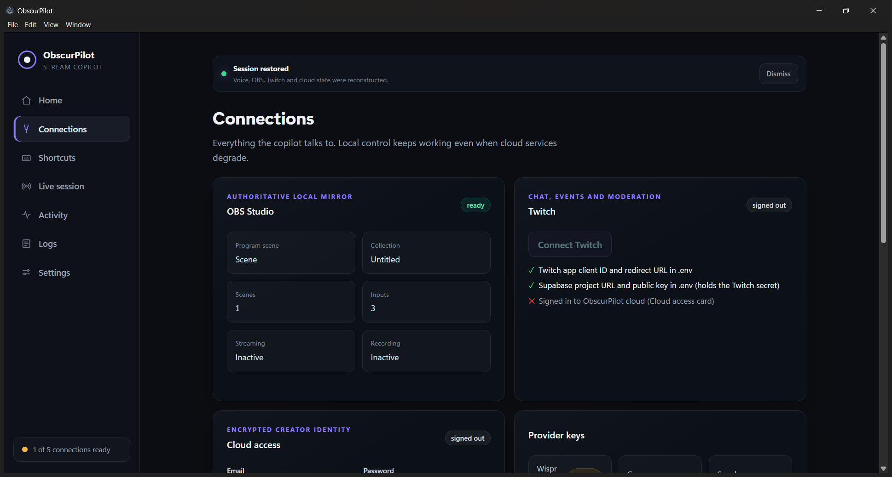

“Pilot,switchtothegamingscene”

What ObscurPilot is doing right now: connections, voice, the agent, and live sessions.
OBS Studio foundC:\Program Files\obs-studio\bin\64bit\obs64.exe
OBS connectingCONNECTING
OBS authenticatingHANDSHAKE_VALIDATED
OBS synchronizingBUILDING_SNAPSHOT
OBS readySYNCHRONIZED
One click. OBS connected.
Every move, logged.
Hold Alt + X. Talk to your stream.
Built entirely by voice with Wispr Flow